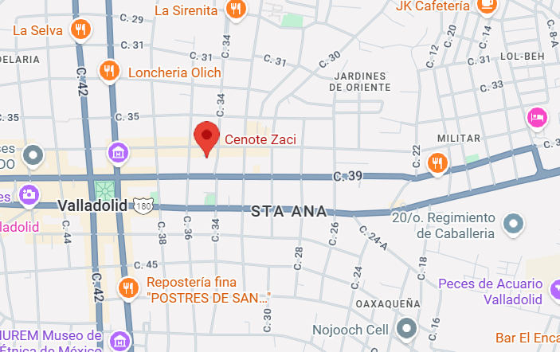

El Cenote Zací es un cenote abierto ubicado en pleno centro de Valladolid, Yucatán. Formado naturalmente hace miles de años, destaca por su enorme bóveda colapsada que deja entrar la luz y crea un ambiente único. Sus aguas cristalinas de tonos azul profundo están rodeadas de paredes rocosas y vegetación colgante. Zací refleja la belleza natural de los cenotes y su importancia en la cultura maya como fuentes de agua y espacios sagrados. Hoy es un atractivo turístico esencial en Valladolid, ideal para disfrutar del paisaje y la historia de la región.
Ubicación |
Información Esencial
|